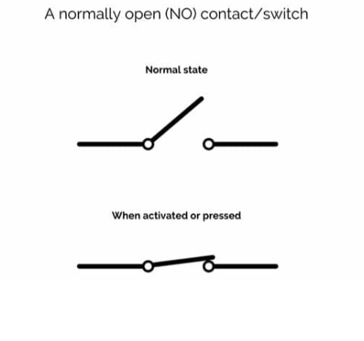

Things you remember from last time?
Today's rough agenda:
Quick reminders:
Doing two things at once
If I ask you to make your board say "hello" every 5 seconds, how would you do it?
You might do it this way:
import time while True: print("hello") time.sleep(5)
Now, what if you wanted to add an interaction?
Your board saying "hello" every 5 seconds, and a button that turns on the red LED? 1
Solution ↩︎
Time is a little funny on tiny computers.
import time
time.time() - number of seconds since Jan 1, 1970
time.time()
Use this to make your board say "hello" every 5 seconds, with a button that immediately turns on the red LED. 1
time.monotonic() - an ever-increasing value per "tick"
time.monotonic()
time.monotonic_ns() - like the above, but in nanoseconds
time.monotonic_ns()
time.localtime() theoretically should give you the current time locally ...
time.localtime()
but the reality is it doesn't work.
Exercise: Create a stopwatch using your board.
Challenge: Have your board blink the number of seconds that elapse between button presses.
So why is this important?
Try this:
Make an animation that spins a pixel around in a circle on your board, without using time.sleep.
time.sleep
Then, have that animation pause when you hit a button, and unpause when you hit it again.
These refer to how we read/interact with the pins on our microcontroller. They tell us what kind of values to expect.
Or: True & False
Or: 1 & 0
import time import board import digitalio button = digitalio.DigitalInOut(board.BUTTON_A) button.switch_to_input(pull=digitalio.Pull.DOWN) while True: print((int(button.value),0,0)) time.sleep(0.2)

"Digital" doesn't just refer to how we read from a button, it can also be how we write to it.
It can be both input and output.
Remember our LED?
import time import board import digitalio led = digitalio.DigitalInOut(board.LED) while True: led.value = True time.sleep(1) led.value = False time.sleep(1)
import time import board import analogio light_sensor = analogio.AnalogIn(board.LIGHT) while True: time.sleep(0.2)
Exercise: Practice using analog input. Can you make the LED blink faster if there's more light? Slower? 1
If you get stuck, here's a sample solution ↩︎
Capacitive sensing uses some of that analog reading
Capacitive Touch Example Code
import time import board import touchio touch_A1 = touchio.TouchIn(board.A1) while True: print((int(touch_A1.value),0,0)) time.sleep(0.01)
Wait a second ... doesn't this look like digital?
change touch_A1.value → touch_A1.raw_value
touch_A1.value
touch_A1.raw_value
So you have both; the Capacitive Touch library technically reads in analog, but it gives you a nice "touched-or-not-touched" value too.
touch_A1.raw_value ← real readings
touch_A1.value ← treated like digital
Exercise: Test out the Capacitive Touch inputs!
value
raw_value
Example code for later reference
cap touch edge detection (regular value), two directions
Now that you know a bit about hardware, let's make something interesting with it.
Use what we've learned to make a surprising, narrative, or poetic interaction.
Use at least one input and one output.
For example:
Neopixels + Buttons
Capacitive Touch + Built-In LED
Microphone + Serial Print
Other libraries/examples to use
CircuitPlayground Library Bundle (use 10.x)